Robocon省赛‖东大之战
第八届辽宁省普通高等学校本科大学生机器人竞赛
月球勘探
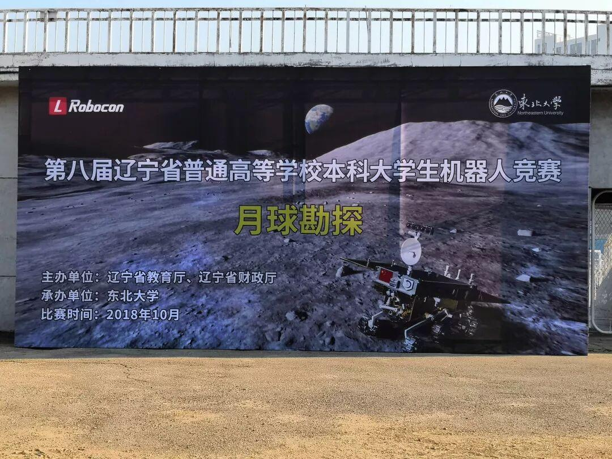
竞赛意义
本届机器人大赛以“月球勘探”为主题。 随着自动化时代的到来，人类的脚步已经不仅仅局限于地球。在这当中，机器人肩负着重要的使命,这是很大的挑战与机遇。本次比赛旨在提高广大学生对开拓新空间，勘探新能源的兴趣，增强创新思维能力，提升工程实践能力。
参赛证
比赛场地
→
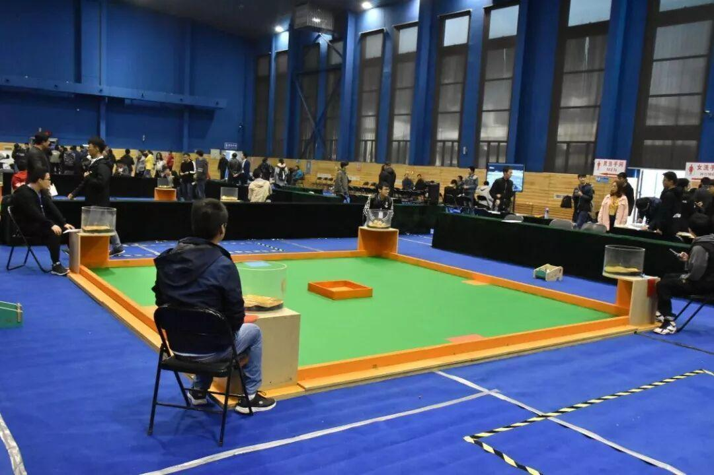
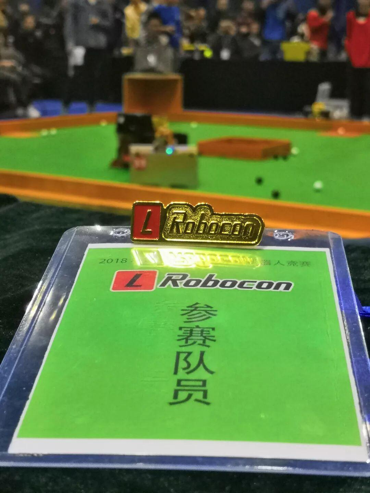
比赛规则
1.比赛时间为 3 分钟；
2.每支参赛队拥有 1 台自动机器人；
3.比赛开始前双方队员有 30 秒的准备，在准备时间双方将自动机器人摆放到出发区并开电；30 秒结束后，双方队员回到准备区；副裁判投放矿石，待矿石稳定后，主裁判 5秒倒计时后吹哨示意比赛开始，在 5 秒倒计时期间，每队只能有一名队员可以在靠近各自机器人的场外等待启动机器人；
4.裁判吹哨示意开始比赛后，自动机器人才能启动离开出发区；参赛队员回到场地外的准备区，直到比赛结束；
5.自动机器人在采矿区内进行拾取矿石任务，储藏室的矿石不允许再次被取出，落到场地外的矿石作废；
6.自动机器人将采集到的矿石放到储藏室内；
7.自动机器人单次采矿数量不限；
8.比赛开始后，自动机器人不允许重启和断电；若 3 分钟之内双方都申请断电，则裁判提前宣布比赛结束；
小组赛结果
此次比赛我们共有三支队伍参加，经过一天的激烈角逐，我们有两支优秀的队伍在小组赛出线，即：沈阳理工大学二队与沈阳理工大学三队。
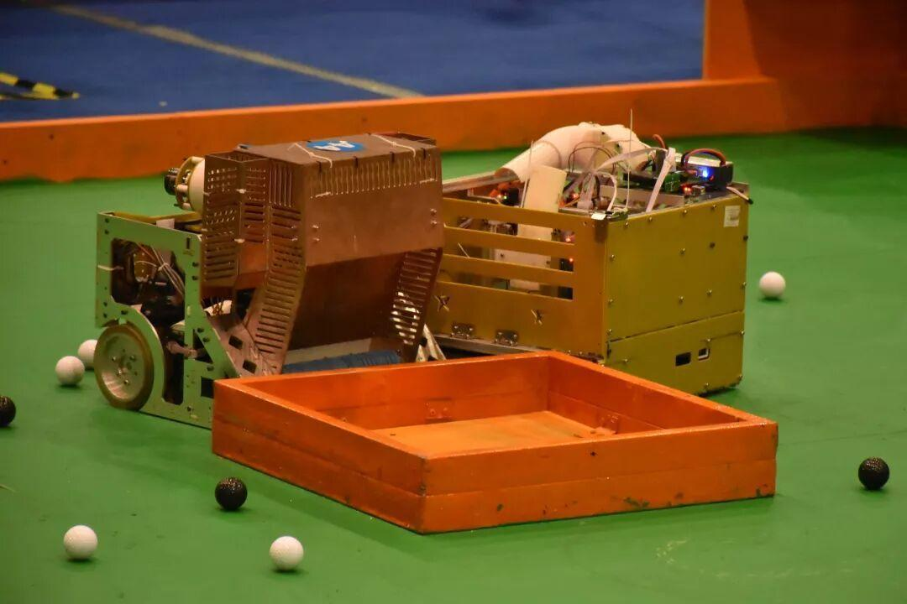
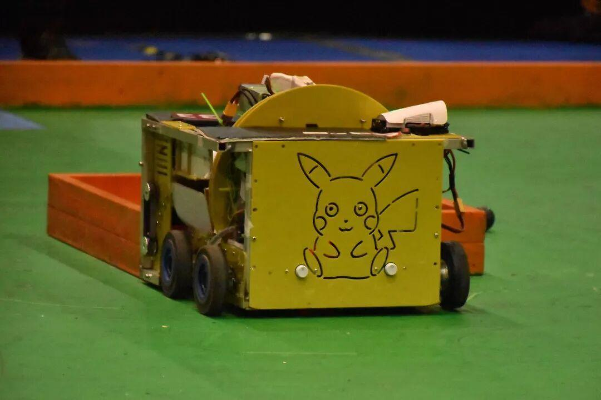
休息时间
趁着比赛的休息时刻，参赛队员抓紧时间调整自己，为下一场比赛养精蓄锐。
队员们对小车进行调整
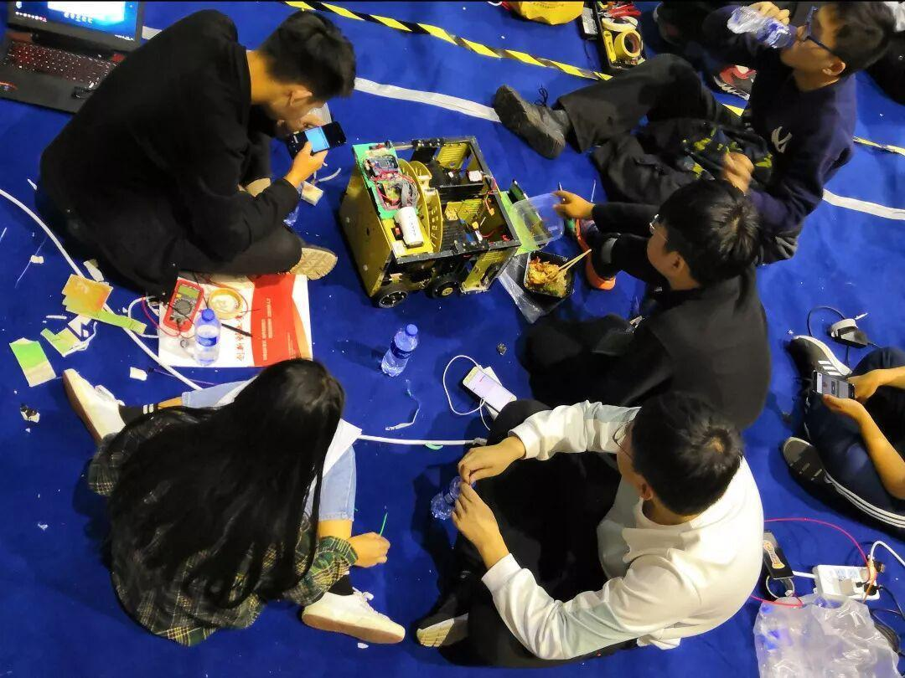
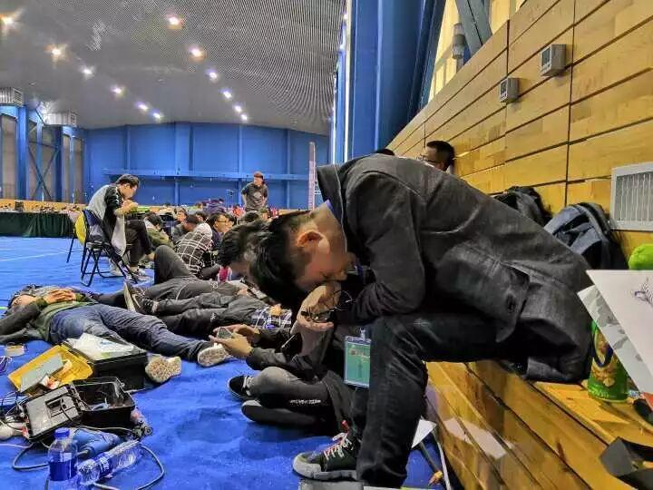
队员们在休息
决赛
第二天，队员们早早来到了赛场，做足了准备，再度踏上了省赛的征战！
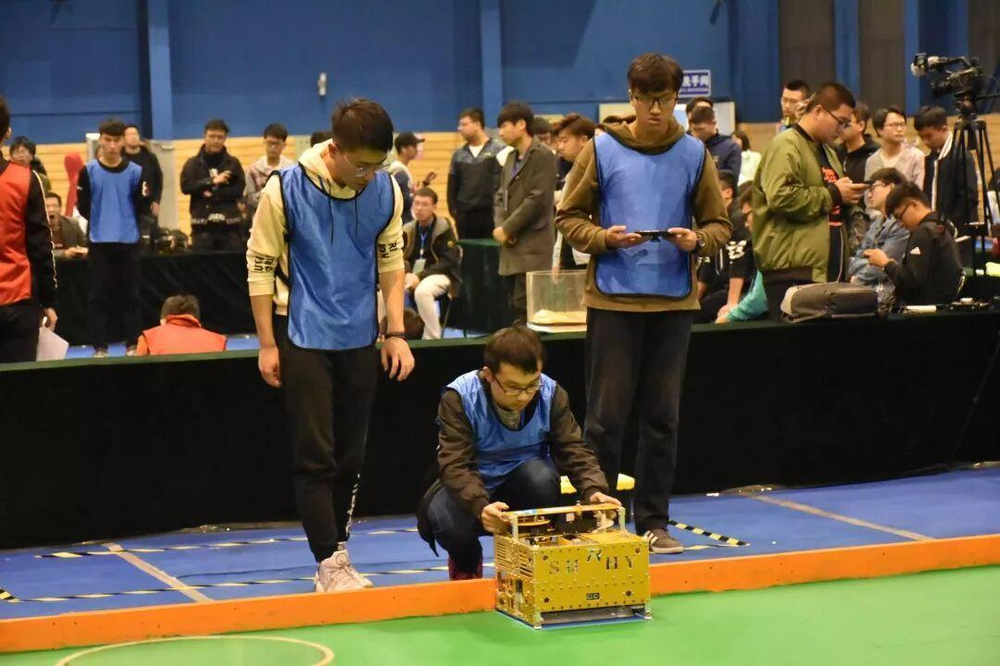
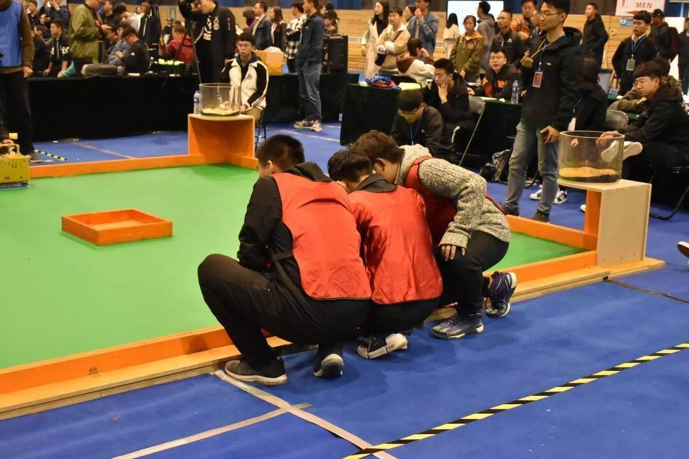
准备比赛
决赛结果
经过了这段时间的努力和不分日夜的辛苦，队员们也收获到了不菲的成果，参加决赛队伍均进16强！荣获省赛二等奖与三等奖！
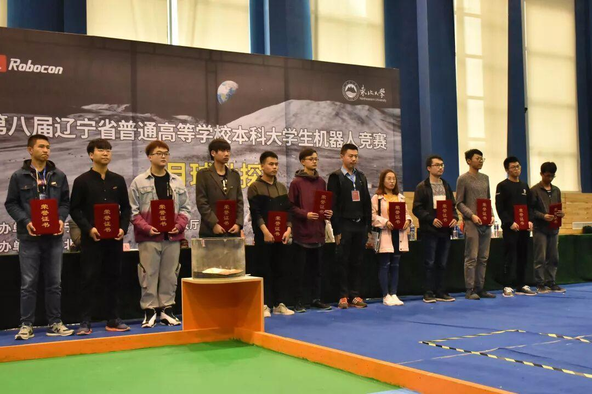
他们带着荣耀踏上归程，我们为此感到骄傲！我们相信，未来，他们，我们，都将会取得更优异的成绩！让我们携手，共同学习，共同进步，创造出更好的成绩！
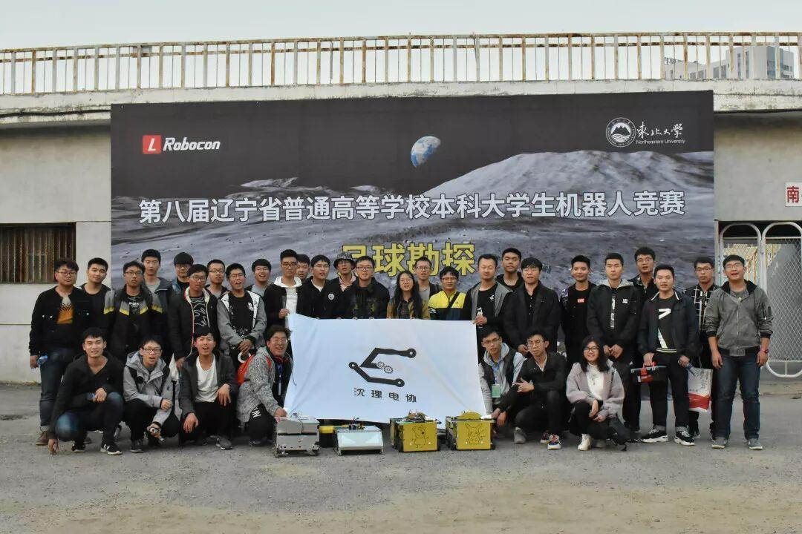
下图为与建筑大学的合影
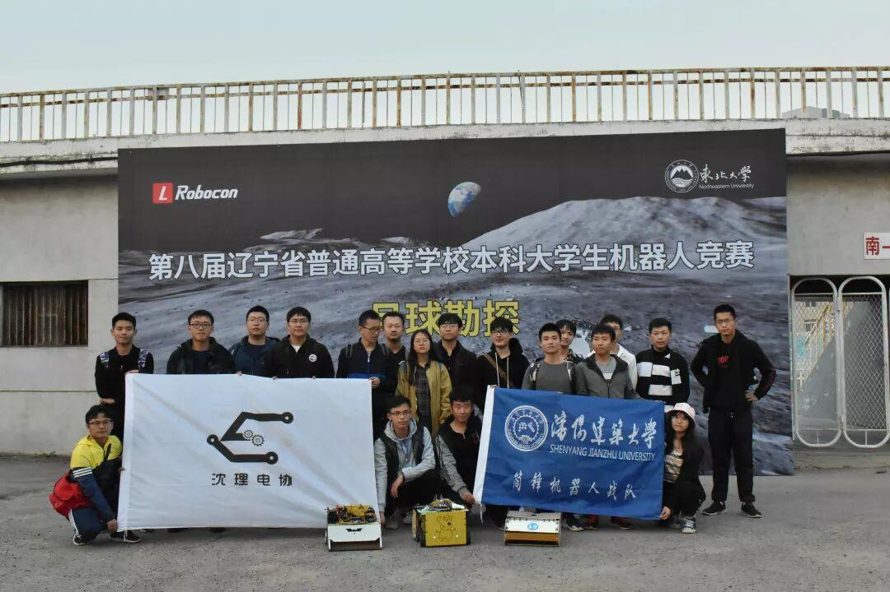
图片：信息部
编辑：阮倩雯